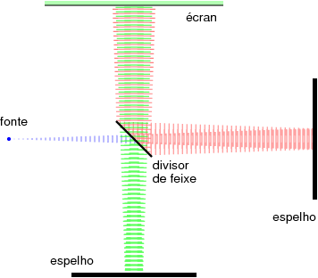
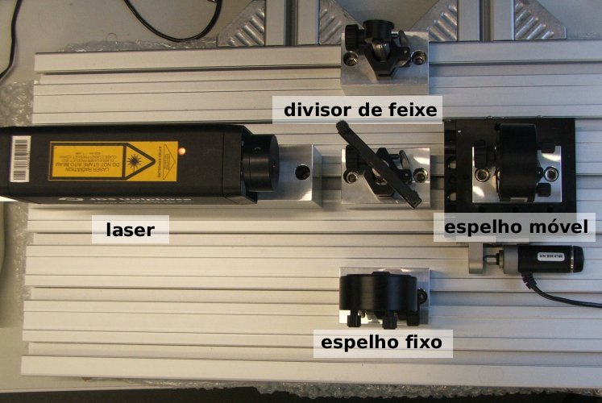
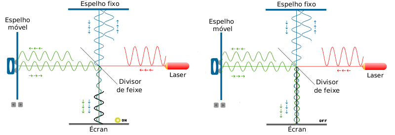

Interferómetro de Michelson
Usa uma única fonte luminosa, e um divisor de feixe que divide o feixe em dois, enviados para espelhos planos que os reflectem para o ecrã.
Se as distâncias entre os espelhos planos e o divisor de feixe forem diferentes, é como se os dois feixes viessem de dois pontos a diferentes distâncias do ecrã.
O raio laser usado no interferómetro produz um feixe paralelo. Considerando um único raio de luz a sair do laser, a interferência no ecrã será unicamente construtiva ou destrutiva, dependendo da diferença das distâncias entre os espelhos planos e o divisor de feixe.
Na realidade o feixe não é uma recta mas sim um cilindro, e os espelhos têm uma pequena inclinação em relação ao eixo do cilindro.

Isso faz com que a distância percorrida por diferentes partes do feixe seja diferente, sendo possível existirem no écran zonas de interferência constructiva e destrutiva. O padrão de interferência obtido são franjas claras e escuras paralelas.
Um deslocamento do espelho móvel em 1/4 do comprimento de onda do laser, faz aumentar o percurso de um dos feixes em 1/2 comprimento de onda. Os pontos onde a função de onda era máxima passa a ser mínima; onde havia interferência construtiva passa a haver interferência destrutiva: cada franja luminosa desloca-se para a franja escura vizinha.